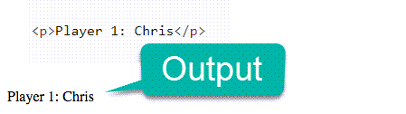
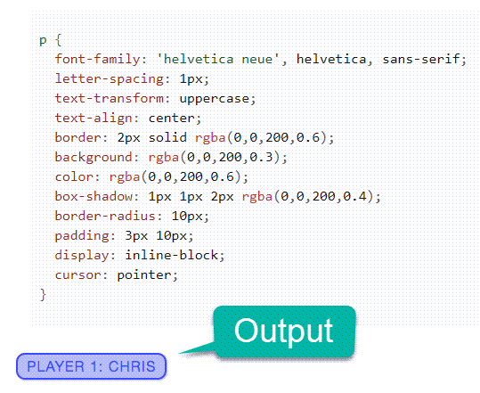

This lesson is focused on getting comfortable with what JavaScript is and what can be done with it.
The majority of this section comes directly from the Mozilla website.
A High-level Definition
JavaScript is a scripting or programming language that allows you to implement complex features on web pages — every time a web page does more than just sit there and display static information for you to look at — displaying timely content updates, interactive maps, animated 2D/3D graphics, scrolling video jukeboxes, etc. — you can bet that JavaScript is probably involved. It is the third layer of the layer cake of standard web technologies, two of which (HTML and CSS) we have covered in much more detail in other parts of the Learning Area.
-
HTML is the markup language that we use to structure and give meaning to our web content, for example defining paragraphs, headings, and data tables, or embedding images and videos in the page.
-
CSS is a language of style rules that we use to apply styling to our HTML content, for example setting background colors and fonts, and laying out our content in multiple columns.
-
JavaScript is a scripting language that enables you to create dynamically updating content, control multimedia, animate images, and pretty much everything else. (Okay, not everything, but it is amazing what you can achieve with a few lines of JavaScript code.)
A Simple Example of the Three Working Together
The three layers build on top of one another nicely. Let's take a simple text label as an example. We can mark it up using HTML to give it structure and purpose:
Then we can add some CSS into the mix to get it looking nice:
And finally, we can add some JavaScript to implement dynamic behavior:
Try clicking on this last version of the text label to see what happens.
So what can it really do?
-
Store useful values inside variables. In the above example for instance, we ask for a new name to be entered then store that name in a variable called
name. -
Operations on pieces of text (known as "strings" in programming). In the above example we take the string "Player 1: " and join it to the
namevariable to create the complete text label, e.g. ''Player 1: Chris". -
Running code in response to certain events occurring on a web page. We used a
clickevent in our example above to detect when the button is clicked and then run the code that updates the text label. -
And much more!
Throughout this course, you will learn not only what JavaScript is capable of doing, but you will also learn how to write your own JavaScript programs, and then make your own dynamic web applications. Your learning will take place through reading yes, but mostly through practice. As you engage in writing code, working through errors, and trying new things, you will learn at an extremely rapid rate.
Where does JavaScript code run?
Have you ever downloaded a file from the internet and when you tried to open it, your computer couldn't find a program to do so? Each type of file on a computer needs a certain program to be able to open the file. The following table shows some common file types that we are used to seeing and software that is able to open those files:
| File Type | Program to run it |
|---|---|
| doc or docx | Microsoft Word (Or Google Docs) |
| mp3 or wav | Groove Music |
| mp4 or mov | VLC Media Player |
| xlsx | Microsoft Excel (Or Google sheets) |
| html | Google Chrome (Or any browser) |
| js | Through html (browser), or in terminal |
For more information, This webpage displays the most common file types along with programs that are able to open them.
You'll notice in the table above, that if I want to actually run a JavaScript file, I have a couple of options. The two most prominent ways to run JavaScript code are as follows:
-
In the browser in a web application.
-
On your computer in the terminal or in a program that can read and render JavaScript code.
In the first class activity this lesson, we will experiment a little bit with both.
Where do you write JavaScript code?
To understand how to write code in a specific language, you need a couple of things. First, you need a tool to write it. Second, you need a place to execute it. For example, if I want to record a video, I could use Zoom. Then, once I have that video file/recording, I need a program to watch/open/execute it like VLC Media Player. When we write JavaScript code, we generally write it in a text editor. You can think of a text editor as being very similar to Microsoft word. If I want to write an English paper, I will use Word. If I want to write a JavaScript program, I will use a text editor.
With that in mind, let's go ahead and do a hands-on exercise.In this exercise, you will write your first JavaScript program. You will run/execute it in a console first, then you will run it in the browser.
Hands-on exercise - Computer Setup, JavaScript Hello World!
Do not continue until you've completed this exercise
Moving forward for the rest of this lesson, you can try writing JavaScript code along with what you're reading and learning to get practice writing and running your code.
What is a variable?
The term variable is one that you will hear many times each day in the programming world. A variable is a memory location that holds data and is accessed by a name. Variables can change and hold different values. In JavaScript, a variable can hold any datatype without declaring if it is going to be a string (text), a number or anything else. The following code shows two different ways of declaring a variable. Each will reserve a space in your computer's RAM. Each will be capable of holding data in that memory location, and we as programmers can access it by the name we give it when we declare it.
var name; // var is keyword to declare a variable
let anotherName; // let will declare block-scoped variable (we'll use this most often)
Instructor Tip
We can add comments into our code which will not be rendered or executed by the program. Instead, they are there to help programmers organize and understand their code more fully. Comments look like this:
// this is a single-line comment!!
/*
This is a multi-line comment
This is a multi-line comment
This is a multi-line comment
*/
Adding Values to our Variables
So far, all we have done is save a space in memory and given that space a name (name, anotherName). Now, let's put some data into those variables:
name = "Nathan";
anotherName = "Birch";
const unchangeableName = "Superman!!"; // const will declare a variable that can never change value
Notice that with name and anotherName we didn't use the keywords var or let again. We only use those keywords to get that space in memory for a variable. Then from there, we can reference the variable by the name and use/change the data any way we want. Looking at the third line of code about, const is another way to allocate space in memory, however...that variable cannot be changed once it is declared. All three of these lines of code instantiated variables, meaning we assigned data to them. unchangeableName however was both declared and instantiated in this single line of code. We can do this with the others as well.
let userName = "Freddy";
const myName = "Nathan Birch"; // const cannot change after declared
userName = "Joey"; // variables declared with let and var can change as many times as we need them to.
Lastly, I can declare and instantiate multiple variables in a single line of code with the following syntax:
JavaScript Types
JavaScript is a loosely typed and dynamic language. Variables in JavaScript are not directly associated with any particular value type, and any variable can be assigned (and re-assigned) values of all types (From Mozilla)
let foo; // foo is undefined
foo = 42; // foo is now a number
foo = 'bar'; // foo is now a string
foo = true; // foo is now a boolean
For your information, there are other datatypes as well that include BigInt, Symbol, Object, and Function. We will learn about Function and Object in the near future. BigInt and Symbol aren't used regularly so we will disregard those for now.
Operators
JavaScript includes operators as in other languages. An operator performs some operation on single or multiple operands (data value) and produces a result. For example 1 + 2, where + sign is an operator and 1 is left operand and 2 is right operand. + operator adds two numeric values and produces a result which is 3 in this case. (From TutorialsTeacher)
JavaScript includes the following categories of operators:
-
Arithmetic Operators
-
Comparison Operators
-
Logical Operators
-
Assignment Operators
-
Conditional Operators
Arithmetic Operators
| Operator | Description |
|---|---|
| + | Adds two numeric operands. |
| - | Subtract right operand from left operand |
| * | Multiply two numeric operands. |
| / | Divide left operand by right operand. |
| % | Modulus operator. Returns remainder of two operands. |
| ++ | Increment operator. Increase operand value by one. |
| -- | Decrement operator. Decrease value by one. |
The example below shows how each one of the arithmetic operators can be used:
var x = 5, y = 10, z = 15; // declare three variables at once
x + y; //returns 15
y - x; //returns 5
x * y; //returns 50
y / x; //returns 2
x % 2; //returns 1
x++; //returns 6
x--; //returns 4
The + operator can also be used for more than just addition in an arithmetic sense. It can be used to join or concatenate different pieces of data:
var a = 5, b = "Hello ", c = "World!", d = 10; // declare 4 variables at once
b + c; // "Hello World!" - string concatenation
a + b; // "5Hello " - concatenated two datatypes
a + d; // 15 - standard mathmatical addition
Comparison Operators
| Operators | Description |
|---|---|
| == | Compares the equality of two operands without considering type. |
| === | Compares equality of two operands with type. |
| != | Compares inequality of two operands. |
| > | Checks whether left side value is greater than right side value. If yes then returns true otherwise false. |
| < | Checks whether left operand is less than right operand. If yes then returns true otherwise false. |
| >= | Checks whether left operand is greater than or equal to right operand. If yes then returns true otherwise false. |
| <= | Checks whether left operand is less than or equal to right operand. If yes then returns true otherwise false. |
The following example demonstrates how comparison operators perform different tasks.
var a = 5, b = 10, c = "5";
var x = a;
a == c; // returns true
a === c; // returns false
a == x; // returns true
a != b; // returns true
a > b; // returns false
a < b; // returns true
a >= b; // returns false
a <= b; // returns true
a >= c; // returns true
a <= c; // returns true
Logical Operators
Logical operators are used to combine two or more conditions. JavaScript includes following logical operators.
| Operator | Description |
|---|---|
| && | && is known as AND operator. It checks whether two operands are non-zero (0, false, undefined, null or "" are considered as zero), if yes then returns 1 otherwise 0. |
| || | || is known as OR operator. It checks whether any one of the two operands is non-zero (0, false, undefined, null or "" is considered as zero). |
| ! | ! is known as NOT operator. It reverses the boolean result of the operand (or condition) |
var a = 5, b = 10;
(a != b) && (a < b); // returns true
(a > b) || (a == b); // returns false
(a < b) || (a == b); // returns true
!(a < b); // returns false
!(a > b); // returns true
Assignment Operators
JavaScript includes assignment operators to assign values to variables with less key strokes. You will always see and use the = operator, but the others are all shortcuts.
| Assignment operators | Description | Example | Equivalent |
|---|---|---|---|
| = | Assigns right operand value to left operand. | ||
| += | Sums up left and right operand values and assign the result to the left operand. | x += 5 | x = x + 5 |
| -= | Subtract right operand value from left operand value and assign the result to the left operand. | x -= 5 | x = x - 5 |
| *= | Multiply left and right operand values and assign the result to the left operand. | x *= 5 | x = x * 5 |
| /= | Divide left operand value by right operand value and assign the result to the left operand. | x /= 5 | x = x / 5 |
| %= | Get the modulus of left operand divide by right operand and assign resulted modulus to the left operand. | x %= 5 | x = x % 5 |
Conditional Operators
It is important for you to be aware that JavaScript includes special operator called ternary operator :? that assigns a value to a variable based on some condition. This is like short form of if-else condition. We will not go further into it at this time.
Statements and expressions are two very important terms in JavaScript. Given how frequently these two terms are used to describe JavaScript code, it is important to understand what they mean and the distinction between the two.
Expressions
Any unit of code that can be evaluated to a value is an expression. Since expressions produce values, they can appear anywhere in a program where JavaScript expects a value such as the arguments of a function invocation. As per the MDN documentation, JavaScript has the following expression categories.
Whether you recognized them as expressions or not, many of the code examples we saw above were expressions.
Arithmetic Expressions
Arithmetic expressions evaluate to a numeric value. Examples include the following:
10; // Here 10 is an expression that is evaluated to the numeric value 10 by the JS interpreter
10+13; // This is another expression that is evaluated to produce the numeric value 23
String Expressions
String expressions are expressions that evaluate to a string. Examples include the following:
'hello';
'hello ' + 'world'; // evaluates to the string 'hello world'
Logical Expressions
Expressions that evaluate to the boolean value true or false are considered to be logical expressions. This set of expressions often involve the usage of logical operators && (AND), ||(OR) and !(NOT). Examples include:
10 > 9; // evaluates to boolean value true
10 < 20; // evaluates to boolean value false
true; // evaluates to boolean value true
a===20 && b===30; // evaluates to true or false based on the values of a and b
Assignment Expressions
When expressions use the = operator to assign a value to a variable, it is called an assignment expression. We saw several examples of this earlier when we discussed variables and assigning values to them. Examples include:
average = 55;
let fullName = "Nathan Birch";
var b = (a = 1); // here the assignment expression (a = 1) evaluates to a value that is assigned to the variable b. b = (a = 1) is another assignment expression. var is not part of the expression. It just creates b as a variable.
Statements
A statement is an instruction to perform a specific action. Such actions include creating a variable or a function, looping through an array of elements, evaluating code based on a specific condition etc. JavaScript programs are actually a sequence of statements. Among others, statements in JavaScript can be categorized as follows:
-
Declaration Statements
-
Expression Statements
-
Conditional Statements
Declaration Statements
Such type of statements create variables and functions by using the var and function statements respectively. Examples include
let sum;
let average;
let total = 0;
Expression Statements
Wherever JavaScript expects a statement, you can also write an expression. Such statements are referred to as expression statements. But the reverse does not hold. You cannot use a statement in the place of an expression.
var x = 5 * 25; // includes expression in statement
Conditional Statements
Conditional statements execute statements based on the value of an expression. Examples of conditional statements includes the if..else and switch statements.
// JavaScript if statement syntax
if (expression)
statement 1
else
statement 2
JavaScript syntax is the set of rules, how JavaScript programs are constructed:
var x, y, z; // Declare Variables
x = 5; y = 6; // Assign Values
z = x + y; // Compute Values
When we talk about the syntax of a programming language, we are generally talking about how that language is actually written. For example, look at the differences in syntax to declare variables in several popular programming languages:
JavaScript
let a = 10;
Java
public int a = 10;
Python
a = 10
Each language has a specific syntax. Anytime we write code that is incorrect it will simply not work. Often times there will be errors that show up to help you identify what code was written incorrectly.
Control flow in programming is the order in which code gets executed. Most people, when reading books, have a specific control flow: Top to bottom, left to right, from the first page to the last. Sometimes that will change when someone wants to peak at the end of a chapter, or maybe they see something unique on the next page that catches their eye. In programming there are several things that can effect control flow or the flow of execution. They are as follows:
-
Sequence - Default: Top to bottom
-
Selection - If/Else Logic
-
Repetition - Repeat a group of statements
-
Function call and return - Execute statements in a function, then return to call point.
-
Try, Catch, Throw - Find and handle errors
The following video (5:26) goes through all of the control structures listed above.